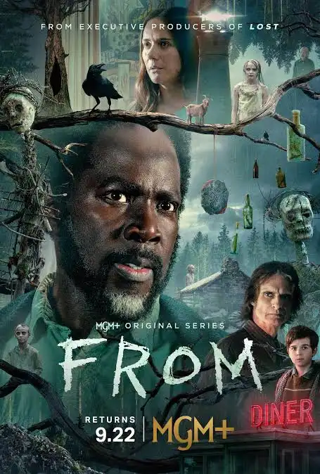
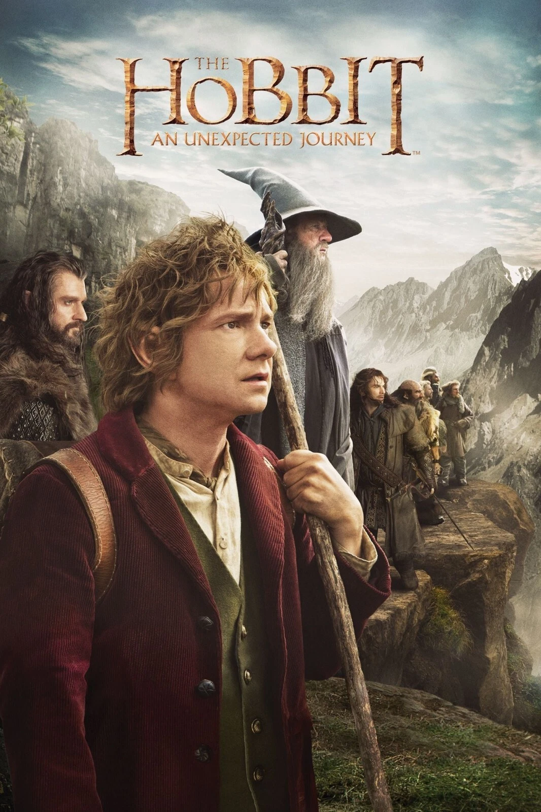

გარედან:
|
 |
მოკლე აღწერა: სერიალი ხსნის კოშმარული ქალაქის საიდუმლოებას შუა ამერიკაში, რომელიც ხაფანგში აკავებს ყველას, ვინც შემოდის. იმის გამო, რომ მოსახლეობა იბრძვის ნორმალურობის გრძნობის შესანარჩუნებლად და გამოსავლის მოსაძებნად, ისინი ასევე უნდა გადაურჩნენ საშინელი არსებებს, რომლებიც გამოდიან მზის ჩასვლისას. |
გამოშვების წელი:2022
IMDB:7.7
კატეგორია:სერიალი,მისტიური,საშინელება
the hobbit
|
 |
მოკლე აღწერა: ფილმი მოგვითხრობს ბილბო ბეგინსას მოგზაურობაზე, რომელიც ერთვება გრანდიოზულ საომარ მოძრაობაში, რომლის მიზანიცაა გნომების დაკარგული ქალაქის ერებორის წართმევა ბოროტი დრაკონისთვის. სრულებით მოულოდნელად მას უკავშირდება ჯადოქარი გენდალფი. ასე პოულობს ბილბო თავის თავს, რომელიც უერთდება ცამეტი ლეგენდარული მებრძოლი გნომისგა ნ შემდგარ გუნდს. მათ მოუწევთ მოგზაურობა ველური მხარეებში, გამყიდველ მიწებზე, გობლინებისა და ორკების დასახლებაზე, რათა მიაღწიონ მიზანს და გაანადგურონ ბოროტი დრაკონი… |